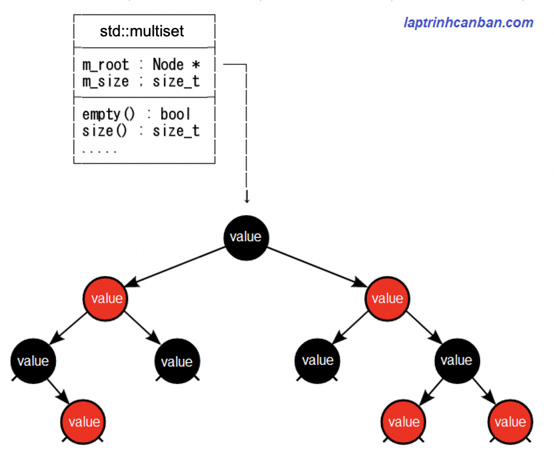

Cùng tìm hiểu về kiểu multiset trong C++. Bạn sẽ biết khái niệm multiset trong c++ là gì, cách khai báo multiset trong C++, cách khởi tạo multiset trong C++, cách truy cập phần tử của multiset, cũng như sự khác biệt giữa list và multiset trong C++ sau bài học này.
Multiset trong c++ là gì
multiset trong C++ là một tập hợp các phần tử có thể trùng lặp được sắp xếp theo thứ tự cụ thể, và được sử dụng làm tiêu chuẩn để xử lý các đối tượng chứa nhiều phần tử trong C++.
Các phần tử trong multiset có thể trùng với các phần tử khác, ngoài ra thì phần tử trong multiset không thể thay đổi giá trị, tuy nhiên chúng có thể được chèn hoặc xóa khỏi multiset.
Về mặt nội bộ, các phần tử trong multiset luôn được sắp xếp theo thứ tự cụ thể một cách nghiêm ngặt, được chỉ ra bởi đối tượng so sánh nội bộ của nó. Nếu bạn thêm các phần tử mới không theo thứ tự cụ thể vào một multiset, chúng sẽ tự động sắp xếp lại theo giá trị trước khi được lưu trữ nội bộ.
Trong C++ cũng có một loại dữ liệu khá giống với multiset là set khi các phần tử trong chúng luôn được sắp xếp theo thứ tự. Tuy nhiên thì khác với set vốn không cho phép các phần tử có thể trùng nhau cùng tồn tại, thì các phần tử trong multiset lại có thể trùng với các phần tử khác nó.
Nói tóm lại thì multiset trong C+++ sẽ giống như một mảng với các phần tử luôn được sắp xếp theo một thứ tự cụ thể.
Về mặt tốc độ xử lý thì multiset có khả năng thêm, xóa, tìm kiếm dữ liệu với tốc độ cực cao là O(log N), và nó còn cao hơn cả vector với tốc là O(1). Tuy nhiên thì giống với set thì do các phần tử được quản lý dạng cây nhị phân nên tốc độ truy cập ngẫu nhiên tới một phần tử chỉ định trong multiset lại cực thấp.
Do đó, trong trường hợp chúng ta không hay thêm xóa tìm kiếm phần tử thì việc dùng vector sẽ có lợi hơn, do tốc độ cũng tương đương mà lại tiết kiệm bộ nhớ.
Tuy nhiên trong các trường hợp không cần thiết việc truy cập ngẫu nhiên và hay thêm xóa tìm kiếm phần tử thì việc sử dụng multiset thay cho vector sẽ có lợi nhiều hơn.
| Loại | Truy cập ngẫu nhiên | Thêm xóa tìm kiếm ngẫu nhiên |
|---|---|---|
| vector | O(1) | O(N) |
| multiset, set | chậm | O(log N) |
Cấu trúc dữ liệu multiset trong c++
Giống với set thì cấu trúc dữ liệu multiset trong C++ thuộc dạng Red–black tree (cây đỏ đen) - một cây nhị phân, là một cấu trúc dữ liệu trong khoa học máy tính để tổ chức các thành phần dữ liệu có thể so sánh.
Cụ thể thì cấu trúc dữ liệu multiset trong C++ có được thể hiện như ví dụ dưới đây. Lưu ý là cấu trúc này có thể khác một chút so với thực tế cấu trúc trong môi trường máy của bạn.

Chúng ta cần đặc biệt lưu ý 3 điểm sau đây về Cấu trúc dữ liệu multiset trong c++:
- Trong các Node sẽ lưu giữ giá trị (value) cũng như con trỏ của các Node con (trái, phải) của nó.
- Các giá trị trong Node thỏa mãn điều kiện giá trị của Node con bên trái <= Giá trị Node cha <= Giá trị của Node con bên phải. Do trong multiset có thể trùng nhau nên dấu
<=được sử dụng. - Độ sâu của các Node bằng nhau và cây Node thì cân bằng.
std::multiset trong C++
std::multiset trong C++ là một thư viện chuẩn được sử dụng để xử lý multiset trong C++.
Giống như std::set thì std::multiset được cài sẵn trong header file set và để sử dụng được chức năng này, chúng ta cần thêm dòng #include <set> vào đầu chương trình.
Cần đặc biệt lưu ý ở đây là #include <set> chứ không phải là #include <multiset> .Khác với các container khác vốn có header file riêng biệt để quản lý thì multiset lại dùng chung header file với set.
|
Lại nữa, namespace của std::multiset là std, do đó bằng cách khai báo sử dụng namespace này vào đầu chương trình mà chúng ta có thể viết gọn std::multiset trong chương trình như sau:
|
Khai báo multiset trong C++
Khai báo 1 multiset trong C++
Để khai báo multiset trong C++, chúng ta viết dòng std::multiset, sau đó viết kiểu dữ liệu giữa cặp dấu <>, và cuối cùng là tên biến như sau:
std::multiset<type> st;
Trong đó st là tên biến multiset và type là kiểu dữ liệu. Cách viết sử dụng cặp dấu <> như trên được viết theo cú pháp khi sử dụng chức năng template của C++ mà chúng ta sẽ cùng học trong các chuyên đề sau.
Chúng ta có thể dùng bất cứ kiểu dữ liệu nào có trong C++ để khai báo type, ví dụ như char, int, double, hay cấu trúc hoặc class tự tạo chẳng hạn.
Lưu ý, mặc dù chúng ta có thể dùng bất cứ kiểu dữ liệu nào có trong C++ để khai báo type, tuy nhiên do trong multiset các phần tử cần phải được sắp xếp, nên kiểu của chúng cũng phải là kiểu dữ liệu có thể được so sánh.
Đối với các kiểu dữ liệu nguyên thủy như char, int, double chẳng hạn thì chúng vốn có thể tự so sánh được, nhưng nếu chúng ta sử dụng các kiểu dữ liệu không phải là kiểu dữ liệu nguyên thủy, ví dụ như cấu trúc hoặc class tự tạo chẳng hạn, thì bắt buộc phải tự định nghĩa toán tử so sánh nội bộ operator<() để làm rõ quan hệ lớn nhỏ giữa chúng.
Lại nữa, trong trường hợp đã khai báo namespace std vào đầu chương trình, chúng ta cũng có thể lược bỏ dòng std:: và dùng cú pháp khai báo multiset như sau:
using namespace std;
multiset<type> st;
Thông thường chúng ta hay khai báo namespace std vào đầu chương trình để sử dụng tới các chức năng thông dụng khác như nhập xuất chẳng hạn, nên trong 2 phương pháp khai báo multiset ở trên thì phương pháp thứ 2 thường được sử dụng nhiều hơn.
Lưu ý multiset được khai báo với cú pháp này sẽ có 0 phần tử bên trong nó. Sau khi khai báo multiset kiểu này, chúng ta có thể sử dụng các hàm thành viên để có thể thêm phần tử vào nó sau này.
Ví dụ cụ thể, chúng ta khai báo 1 multiset thuộc kiểu dữ liệu nguyên thủy như sau:
|
Còn khi khai báo 1 multiset không thuộc kiểu dữ liệu nguyên thủy, ví dụ như struct chẳng hạn thì chúng ta phải tự tạo ra toán tử so sánh nội bộ operator<() để làm rõ quan hệ lớn nhỏ giữa các phần tử như ví dụ sau:
struct Person { |
Khai báo đồng thời nhiều multiset trong C++
Trong trường hợp cần khai báo đồng thời nhiều multiset trong C++, chúng ta viết các tên các biến cách nhau bởi dấu phẩy vào đằng sau std::multiset với cú pháp sau đây:
using namespace std;
multiset<type> name1, name2, name3, ... ;
Ví dụ cụ thể:
|
Khởi tạo multiset trong C++
Ngoài cách khai báo rồi gán giá trị cho multiset sau đó thì chúng ta cũng có thể khởi tạo multiset và gán luôn giá trị ban đầu cho multiset.
Chúng ta khởi tạo multiset trong C++ cách sử dụng cặp dấu ngoặc {} với cú pháp sau đây:
std::multiset<type> st {value1, value2, value3, ...};
Trong đó
typelà kiểu dữ liệustlà tên biến multisetvaluelà các giá trị của multiset
Ví dụ:
std::multiset<string> user{"Kiyoshi", "male", "Tokyo"}; |
Khai báo multiset 2 chiều trong C++
Giống như mảng thì chúng ta cũng có thể sử dụng multiset đa chiều trong C++, và loại multiset đa chiều hay được sử dụng đó chính là multiset 2 chiều trong C++.
Để khai báo multiset 2 chiều trong C++ cũng như các loại multiset đa chiều khác, chúng ta sử dụng tới cú pháp sau đây:
using namespace std;
multiset<multiset<type> > st {l1, l2, l3, ...};
Trong đó:
stlà tên biến multiset 2 chiềullà các multiset 1 chiều được sử dụng như phần tử của multiset 2 chiều
Lưu ý, chúng ta cần phải viết thêm dấu cách giữa cặp dấu > > khi khai báo multiset 2 chiều. Lý do là để phân biệt với toán tử >> được sử dụng để dịch chuyển bit trong C++.
Ví dụ cụ thể:
|
Chúng ta cũng có thể khởi tạo các multiset 1 chiều trước rồi dùng chúng để khai báo multiset 2 chiều như sau:
|
Truy cập phần tử trong multiset C++
Khác với vector hay mảng, do cấu trúc của multiset theo dạng cây chứ không phải dạng mảng nên chúng ta không thể truy cập ngẫu nhiên vào phần tử bất kỳ trong một multiset.
Do vậy chúng ta cũng không thể sử dụng index của các phần tử để truy cập vào nó theo cách thông thường được.
Ví dụ nếu dùng index để truy cập vào vị trí ngẫu nhiên trong multiset thì lỗi sẽ trả về như sau:
multiset<string> user{"Kiyoshi", "male", "Tokyo"}; |
Thay vào đó, chúng ta cần phải tiến hành truy cập tuần tự vào các phần tử của multiset, thông qua vòng lặp hoặc là trình lặp mà Kiyoshi đã giới thiệu trong bài Duyệt multiset trong C++.
Ví dụ, chúng ta có thể truy cập vào phần tử của multiset 1 chiều thông qua vòng lặp dựa trên phạm vi như sau:
|
Chúng ta cũng có thể truy cập và in ra toàn bộ các phần tử trong multiset 1 chiều như sau:
|
Kết quả:
Kiyoshi |
Tương tự khi chúng ta cần truy cập vào phần tử trong multiset 2 chiều trong C++:
|
Và kết quả:
Honda |
vector vs multiset trong C++
Như đã phân tích ở trên thì giữa multiset và vector trong C++ có một số điểm khác biệt như sau:
- Vector là mảng động còn multiset có cấu trúc cây nhị phân tạo bởi các Node
- Phần tử trong vector không được sắp xếp còn phần tử trong multiset thì được tự động sắp xếp thứ tự cụ thể.
- Vector có tốc độ truy cập ngẫu nhiên nhanh hơn multiset, nhưng có tốc độ thêm xóa tìm kiếm ngẫu nhiên kém hơn multiset.
Thông thường trong trường hợp chúng ta không hay thêm xóa tìm kiếm phần tử thì việc dùng vector sẽ có lợi hơn, do tốc độ cũng tương đương mà lại tiết kiệm bộ nhớ.
Tuy nhiên trong các trường hợp không cần thiết việc truy cập ngẫu nhiên và hay thêm xóa tìm kiếm phần tử thì việc sử dụng multiset thay cho vector sẽ có lợi nhiều hơn.
Tổng kết
Trên đây Kiyoshi đã hướng dẫn bạn về multiset trong C++ rồi. Để nắm rõ nội dung bài học hơn, bạn hãy thực hành viết lại các ví dụ của ngày hôm nay nhé.
Và hãy cùng tìm hiểu những kiến thức sâu hơn về C++ trong các bài học tiếp theo.
HOME>> lập trình c++ cơ bản dành cho người mới học lập trình>>23. multiset trong c++